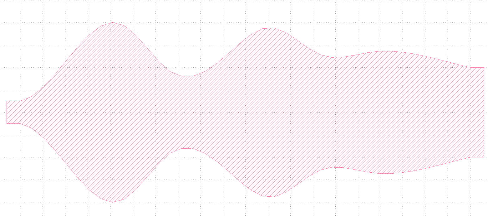
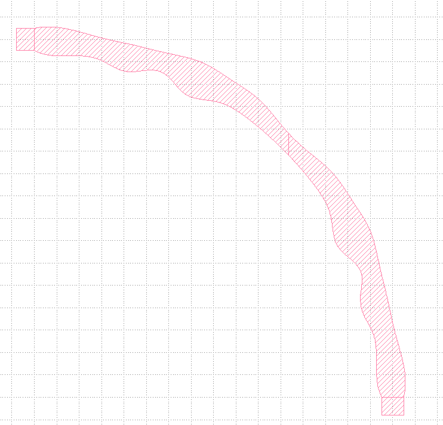
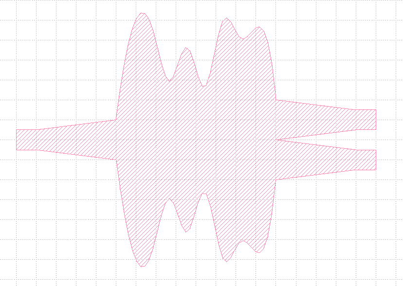
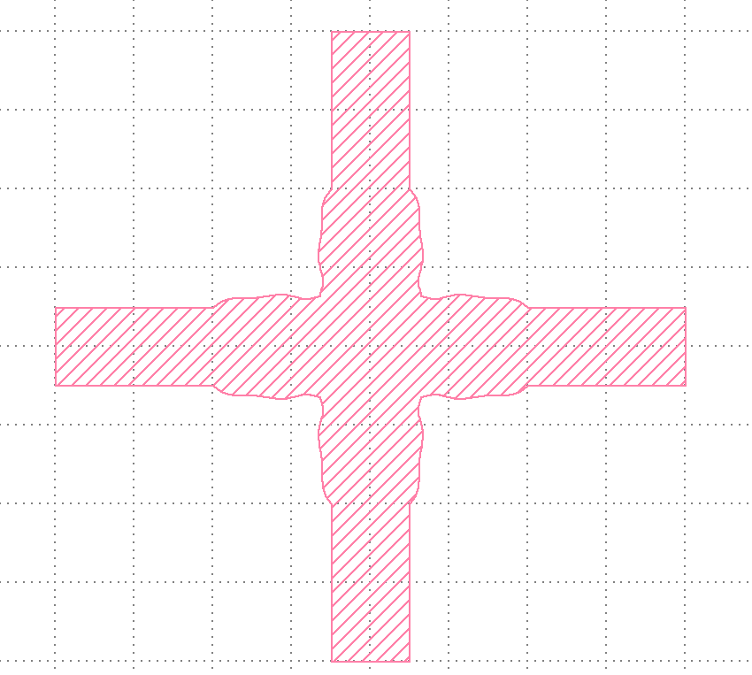

Device Optimization
Flexible Device Library
A collection of ready to use designs of the most common photonic devices. These devices can be used together with optimization libraries to build GDS masks and compact models for any material platform.
Flexible Taper
This example shows how to use the flexible taper function flex_taper.
import numpy as np
from pyOptiShared.Designs import flex_taper
# Generate the array of random widths
min_width, max_width, num_widths=0.4,2.2,8
w = np.random.uniform(low=min_width, high=max_width, size=num_widths)
lib=flex_taper(widths=w,taper_length=10,resolution=40,write=True)
This code should generate a taper with randomly varying sections similar to the following image.
{kind=link}

Flexible 90 degrees bend
This example shows how to use the flexible 90 degrees bend function flex_90bend.
This example shows how to use the flexible taper function flex_taper.
import numpy as np
from pyOptiShared.Designs import flex_bend90
# Generate the array of random widths
min_width, max_width, num_widths=-0.1,0.2,8
w = np.random.uniform(low=min_width, high=max_width, size=num_widths)
dr_in=np.random.uniform(low=min_width, high=max_width, size=num_widths)
dr_out=np.random.uniform(low=min_width, high=max_width, size=num_widths)
lib=flex_bend90(dr_in=dr_in,dr_out=dr_out,radius=8,resolution=40,write=True)
This code should generate a 90 degrees bend with randomly varying sections similar to the following image.
{kind=link}

Flexible Splitter
This example shows how to use the flexible splitter function flex_splitter.
import numpy as np
from pyOptiShared.Designs import flex_splitter
# Generate the array of random widths
min_width, max_width, num_widths=1,3.2,8
w = np.random.uniform(low=min_width, high=max_width, size=num_widths)
lib=flex_splitter(widths=w,length=4,taper_length=2,resolution=40,write=True)
This code should generate a splitter with randomly varying middle sections similar to the following image.
{kind=link}

Flexible Waveguide Crossing
This example shows how to use the flexible waveguide crossing function flex_crossing.
import numpy as np
from pyOptiShared.Designs import flex_crossing
# Generate the array of random widths
min_width, max_width, num_widths=0.02,0.1,8
cross_dw = np.random.uniform(low=min_width, high=max_width, size=num_widths)
flex_crossing(cross_dw=cross_dw,dsep=2,resolution=40,write=True)
This code should generate a waveguide crossing with randomly varying sections similar to the following image.
{kind=link}

Please see the full documentation for further details on individual functions Flex Device Library.
Optimization Examples
Splitter Design - Particle Swarm Optimization
import numpy as np
import os
from pyOptiShared.LayerInfo import LayerStack
from pyOptiShared.Material import ConstMaterial
from pyOptiShared.DeviceGeometry import DeviceGeometry
from pyOptiShared.Material import ConstMaterial
from pyFDTDKernel.pyFDTDSolver import pyFDTDSolver
from pyOptiShared.SimResults import FDTDSimResults
from pyOptiShared.OptimizeVerse import PSO
from pyOptiShared.Designs import flex_splitter
def RunSimulation(layer_stack:LayerStack,gds_file:str,
lmin:float,lmax:float,npts:int,
space_step:float=0.05,
port_dir='both',wgmin:float=None,wgmax:float=None,
symmetries=None,
subpixel_level:int=2,
mode_indices=0,
mon_z=0.11,
auto_shutoff_limit=1e-3)->FDTDSimResults:
# Defines the Device Geometry
device_geometry = DeviceGeometry()
device_geometry.SetFromGDS(
layer_stack=layer_stack,
gds_file=gds_file,
buffers={'x':0.5,'y':0.5,'z':1}
)
results_filename = os.path.splitext(gds_file)[0]
if wgmin!=None and wgmax!=None:
device_geometry.SetAutoPortSettings(direction=port_dir,port_buffer=1,min=wgmin,max=wgmax)
elif wgmin==None and wgmax!=None:
device_geometry.SetAutoPortSettings(direction=port_dir,port_buffer=1,max=wgmax)
elif wgmin!=None and wgmax==None:
device_geometry.SetAutoPortSettings(direction=port_dir,port_buffer=1,min=wgmin)
else:
device_geometry.SetAutoPortSettings(direction=port_dir)
#device_geometry.Show()
# General Simulation Settings and Simulation Run
lmin = lmin
lmax = lmax
lcen = (lmax+lmin)/2
npts=npts
tfinal = 35000
fdtd_solver = pyFDTDSolver()
fdtd_solver.SetPorts(profile="gaussian-pw", lcenter=lcen, lmin=lmin, lmax=lmax, npts=npts, mode_indices = mode_indices ,symmetries=symmetries)
fdtd_solver.AddDFTMonitor(mon_type="2d-z-normal", z0=mon_z, name="MyDFTMonitor1",
lmin=lmin, lmax=lmax,npts=npts,
save_hx=True,save_hy=True,save_hz=True,
save_ex=True,save_ey=True,save_ez=True)
fdtd_solver.SetSimSettings(sim_time=tfinal, space_step=space_step, subpixel_level=subpixel_level, save_path=r"results",results_filename=results_filename,
device_geometry = device_geometry,auto_shutoff_limit=auto_shutoff_limit,export_mat_grid=True,verbosity='ERROR')
results = fdtd_solver.Run()
return results
def my_obj_fun(x):
widths = x[0:11-1]
length = x[11-1]
flex_splitter(widths,length,resolution=50,write=True)
results = RunSimulation(layer_stack=layer_stack,gds_file='flex_splitter.gds',
space_step = 0.05,
lmin=1.5,lmax=1.6,npts=21,
port_dir='x',wgmin=None,wgmax=None,
symmetries='1x2',subpixel_level=2)
s21 = results.sparameters['S21'].Get('data')
#s11 = results.sparameters['S11'].Get('data')
res=abs((abs(s21[11]))**2-0.5)
return res
# Define Materials
si02_mat = ConstMaterial(mat_name="SiO2", epsReal=1.45**2,color='lightgreen')
si_mat = ConstMaterial(mat_name="Si", epsReal=3.5**2,color='lightblue')
air_mat = ConstMaterial(mat_name="Air", epsReal=1**2,color='lightyellow')
# Creates the Layer Stack
layer_stack = LayerStack()
layer_stack.addLayer(name="L1", number=1, thickness=0.22, zmin=0.0,
material=si_mat, cladding=air_mat,
sideWallAng=0)
layer_stack.setBGandSub(background=air_mat, substrate=si02_mat)
lower_bound = np.asarray([0.4998,0.55,0.60,0.60,0.70,0.75,0.80,0.85,0.95,0.9998,2])
upper_bound = np.asarray([0.5002,1.25,1.25,1.25,1.25,1.25,1.25,1.25,1.15,1.002,4])
# ---------------Optimization parameters------------------------------------------
num_particles = 5 # Number of particles in the swarm
position_lower_bound = lower_bound # lower position bounds
position_upper_bound = upper_bound # upper position bounds
velocity_lower_bound = -0.1 # lower velocity bounds
velocity_upper_bound = 0.1 # upper velocity bounds
Niter = 5 # Number of iterations
#---------------------------------------------------------------------------------
options = {'c1':0.5, 'c2':0.3, 'kappa':0.9}
results = PSO(my_obj_fun,
position_lower_bound,position_upper_bound,
velocity_lower_bound,velocity_upper_bound,
pso_options=options,
num_particles=num_particles,Niter=Niter)
{kind=link}
{kind=link}
{kind=link}